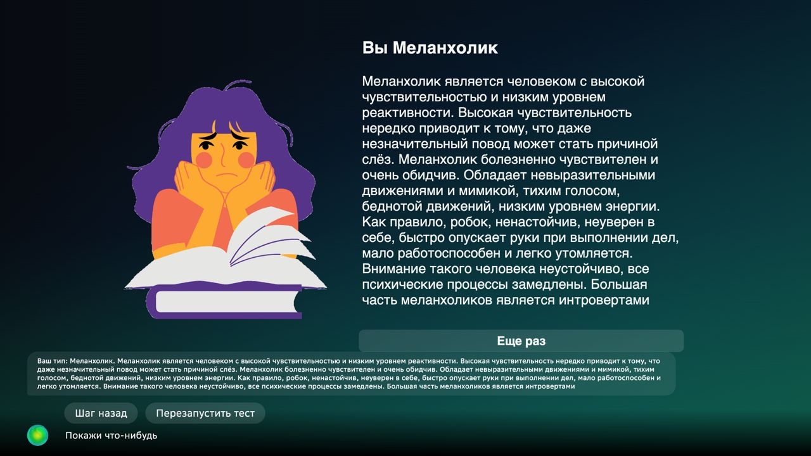
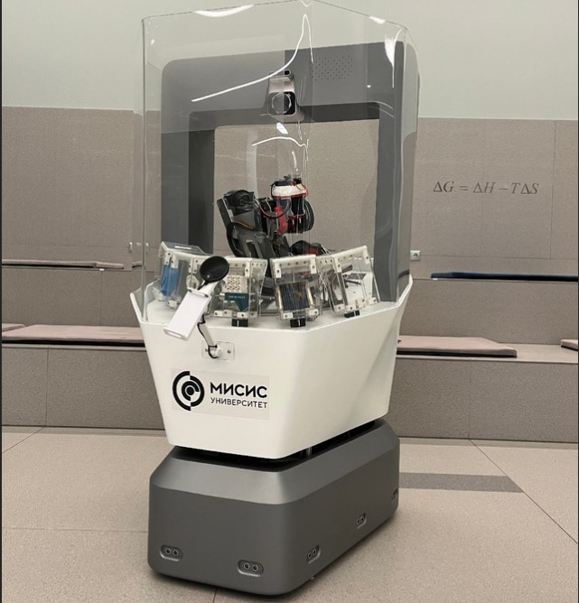

Projects
SmartApp for Sber Portal
Developed the bot *“Temperament Test”* for the Sber Portal, enhancing user experience through interactive personality assessments.
Abi2Bot - Tour Guide Robot
Participated in creating Abi2Bot, a robot designed to serve as a tour guide, offering information and guidance to visitors in museums and exhibitions.
YezhK Robot for Battle of Robots

Built the YezhK robot for participation in the *Battle of Robots* League, focusing on autonomous movement and robot combat strategies.